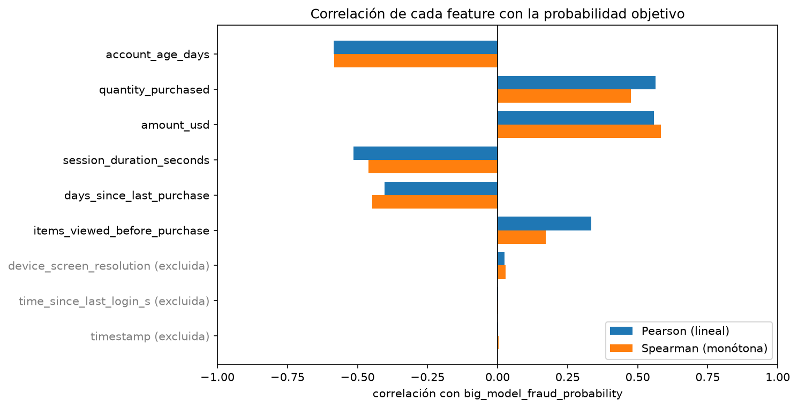
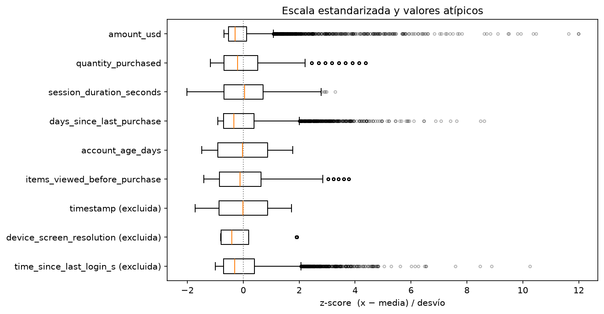
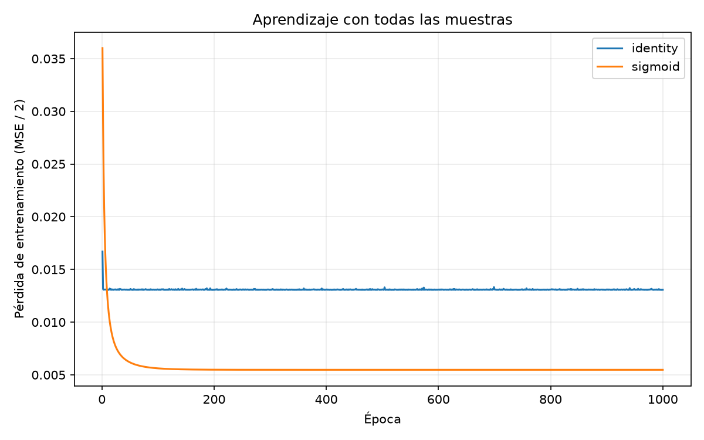
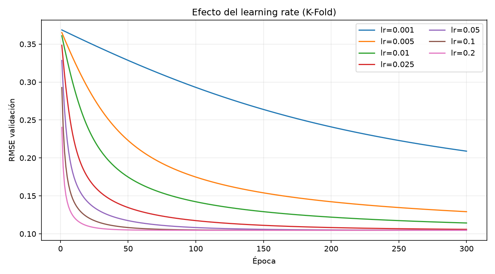
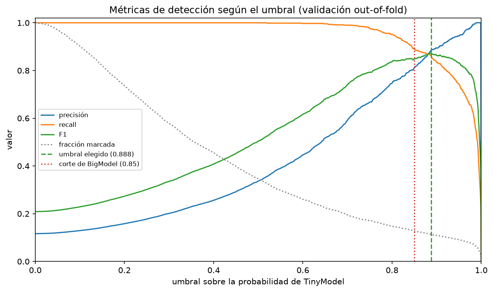
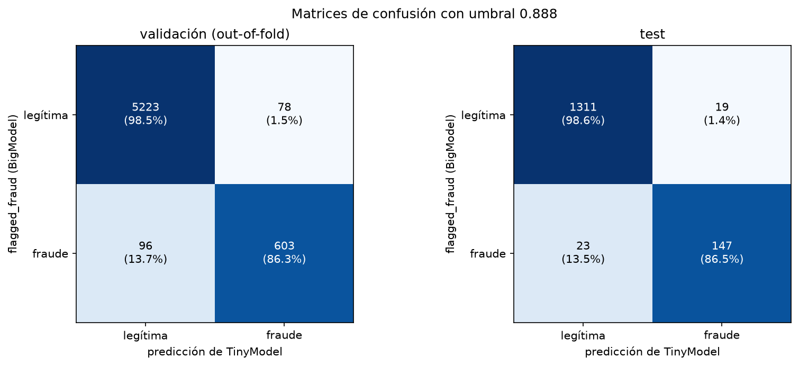
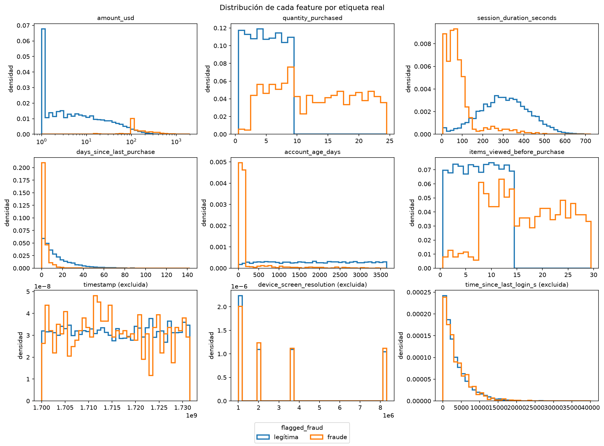
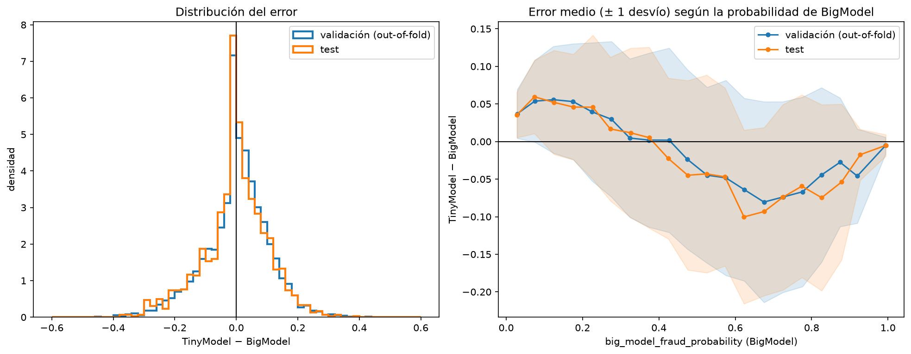

7 500 transacciones limpias; la etiqueta es la decisión de BigModel

0 faltantes, 0 duplicados
11,6 % marcadas como fraude
flagged_fraud = 1 exactamente cuando \(p > 0{,}85\)
La etiqueta no es verdad independiente: es BigModel con umbral 0,85.
Seis features se relacionan con la probabilidad; tres no aportan nada

Descartamos timestamp, device_screen_resolution y time_since_last_login_s: |r| < 0,03 con ambos métodos.
La relación no es lineal: hay saltos que una recta no captura

Escalas muy distintas y colas largas: estandarizamos

\[ x' = \frac{x - \mu}{\sigma} \]
\(\mu\) y \(\sigma\) se calculan solo con las filas de entrenamiento de cada partición.
El lineal se estanca; el sigmoide llega a un 35 % menos de error

| lineal | sigmoide | |
|---|---|---|
| RMSE | 0,162 | 0,105 |
| MAE | 0,130 | 0,076 |
| fuera de [0, 1] | 428 | 0 |
Todas las muestras, 1000 épocas, mismos hiperparámetros.
Con learning rate ≥ 0,05 todas las corridas llegan al mismo error

SGD, lr = 0,05
batch de 128
1000 épocas
Barrido con K-Fold sobre desarrollo: el test no participa.
Sin sobreajuste: train, validación y test dan el mismo error

| RMSE | |
|---|---|
| train (media) | 0,1045 |
| validación | 0,1047 ± 0,0012 |
| test | 0,1052 |
| baseline constante | 0,303 |
TinyModel sigue a BigModel, con un sesgo sistemático en la zona media

Como detector, TinyModel ordena casi perfecto: AUC 0,992 en test

El umbral que maximiza F1 en validación es 0,888

En test, el umbral elegido se sostiene y supera al corte de BigModel

| test | 0,888 | 0,85 |
|---|---|---|
| precisión | 0,886 | 0,832 |
| recall | 0,865 | 0,900 |
| F1 | 0,875 | 0,864 |
| marcadas | 11,1 % | 12,3 % |
Correlaciones entre todas las columnas

Distribución de cada feature por clase

Dónde se equivoca TinyModel

Probabilidad de TinyModel por clase

Inicialización guiada: converge antes, pero termina igual

RMSE inicial 0,120 (guiada) vs 0,370 (aleatoria); ambas terminan en 0,1047.